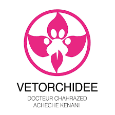
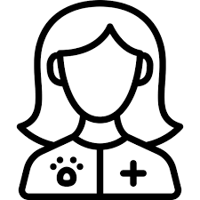
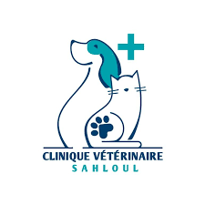
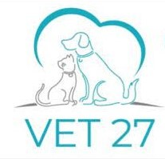

Pawsome Care
Home
MyPet
MyVet
Q&A
Shop
Contact
veterinarians available in Sousse

Clinique Vétérinaire Les Orchidées
Adresse :
Lotissement 236 rue mongi grira sahloul 3 Sousse, Sousse 4054
Zones des servies :
Sousse et les zones à proximité
Horaires :
Ouvre à 09:00 - Ferme à 20:00
Téléphone : 55 026 000
Facebook:
Clinique Vétérinaire les Orchidées Sahloul 3

Dr Chedlia Selmi Chtioui
Adresse :
Avenue les Orangers, Avenue des orangers, Sousse, Tunisie 4051
Zones des servies :
Sousse et les zones à proximité
Horaires :
Ouvre à 09:00 - Ferme à 20:00
Téléphone : 98 453 999
Dr Ahmed Lahouar
Adresse :
Allala Fassi, Hammam Sousse 4011
Zones des servies :
Sousse et les zones à proximité
Horaires :
Ouvre à 09:00 - Ferme à 20:00
Téléphone :
50 775 670

Dr Aroua Khiari Mzabi
Adresse :
Sousse
Zones des servies :
Sousse et les zones à proximité
Horaires :
Ouvre à 09:00 - Ferme à 20:00
Téléphone :
98 536 471

Clinique vétérinaire vet 27
Adresse :
RJW3+VGG, Av. Imam Mouslem, Hammam Sousse
Zones des servies :
Sousse et les zones à proximité
Horaires :
Ouvre à 09:00 - Ferme à 20:00
Téléphone :
28 884 898
Instagram:
clinique_veterinaire_vet27